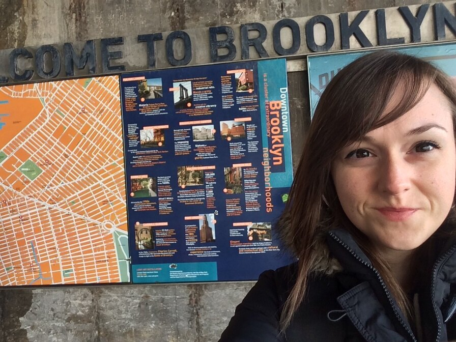
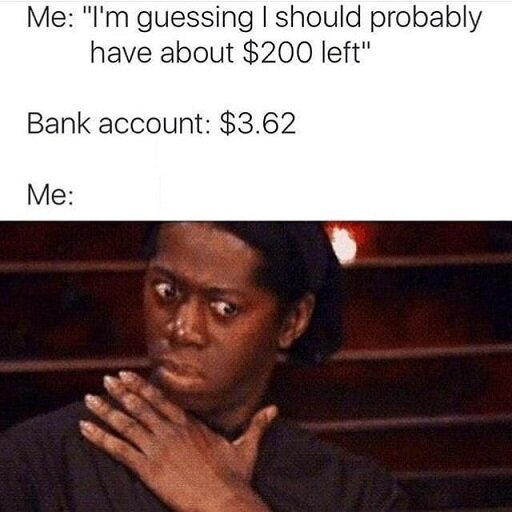
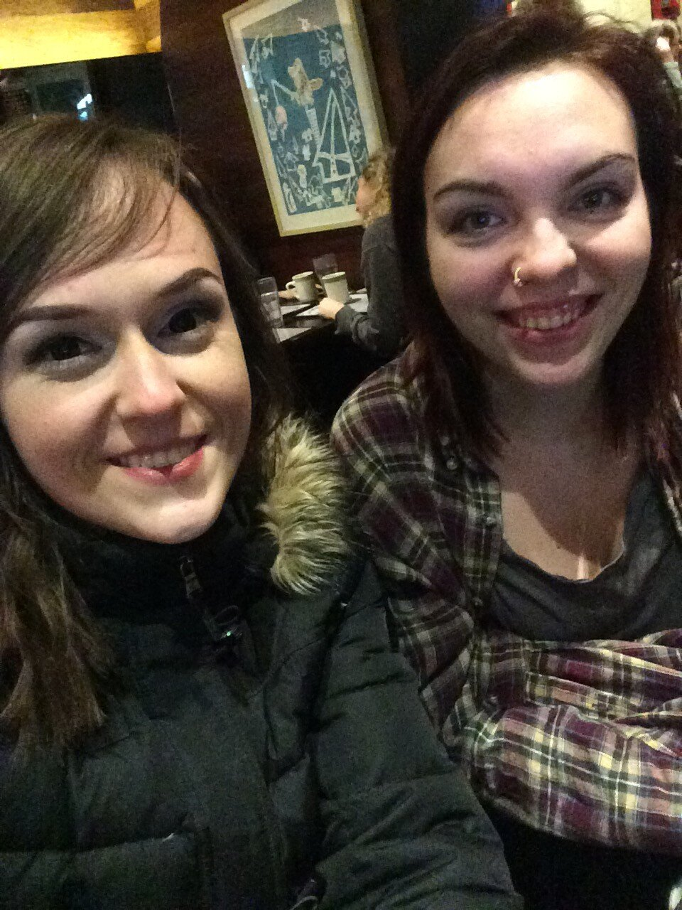
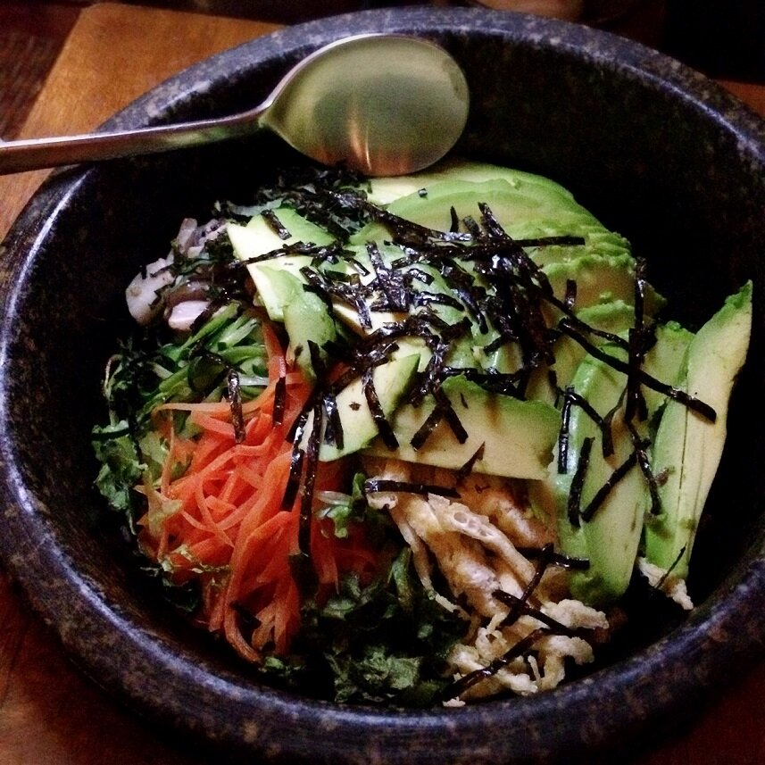
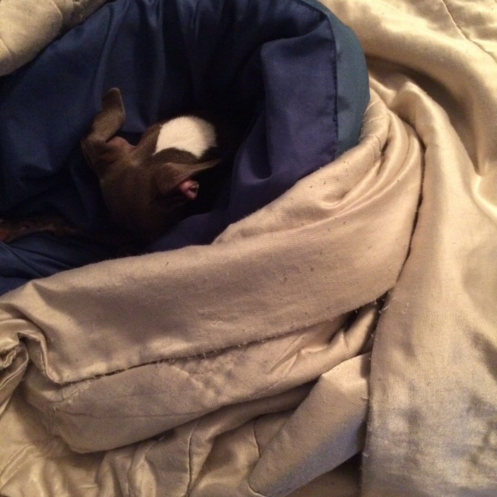

My Trip to NYC + Vegan Restaurants





I'm back from NYC! Okay so this post is a little late.. because I got back Tuesday. But I had SO much catch up to do and I prioritized editing the vlog and another important video. But now the blog post is here + extra photos!!
OKAY FIRST NYC is amazing. There is so much to see.. so much to EAT omg... and just. Awesome. The NYC vegan restaurants selection is unreal. But with that...that means your money disappears SO FAST. I got back from NYC looking at my bank account like... WELL THAT WAS UNEXPECTED. No regrets though.
The vlog shows most of everything so I really suggest you watch the adventures (most important - FOOD and the names of the vegan restaurants - I'll also include the list at the end of this post), but I wanted to insert a few extra pictures here!
Background: my mom had to go to NYC for work Monday-Thursday. So she had a hotel Sunday and after free for her (and for me to crash). But she went early with me Friday and got a diff hotel Friday & Saturday night. So that's why we changed half way through! Anyways - the hotel she booked had a view of Times Square! So cool. This is me hiding my exhaustion at midnight the first night simply because I was amazed by the lights from the Square!
Next day (and basically all the days) I was attached to the hip with Leah! I love her so much. It's crazy we met more than 3 years ago through Instagram!! I can't imagine a world without her. Both being vegan, we explored awesome restaurants and yummy food. We have very similar food interests so it was easy.
My mom and cousin would go eat at different places because my mom is really focused on getting protein from fish and chicken, which obviously wasn't at the vegan restaurants. So that's why you don't see them as much in the vlog! But we did do awesome things together like see my very first broadway show! I actually had to be dragged there by my mom and cousin (who works for broadway), but I fell in LOVE. They chose to see Kinky Boots, which couldn't have been any better for my first show. Basically a drag show, but on Broadway? Count me in.
On Monday, my mom, cousin, and Leah all had to work. So I explored on my own. It was actually really really fun to have a day to make split-second decisions and see whatever I wanted to see. I really had just two goals in mind: Grand Central Station and Brooklyn Bridge. So I walked to the station but found many detours along the way, like the huge public library! Then once I took the train to the Brooklyn Bridge, I decided to walk across it rather than just look...and that turned into.."hey Kim, you have nothing better to do, why not just walk the 8 miles back to the hotel?" and so I did. It was nothing less than amazing. SO much to see in NYC and so much variety. I love it so much. I love culture - something I missed a lot when I was living in Kennewick, Washington last year.
Leah and I reserved dinner at this fancy restaurant where you take off your shoes and sit on the floor. Pricey, but so worth the experience. It was our late Galentine's dinner / her birthday dinner! It's hard to see the food in the vlog because of dim lighting, but we got KABOCHA pancakes, and stone rice bowls!! Soo gooood and satisfying. Rice 4ever.
Andddd. yep! Tuesday I went home, got Pesto from daycare, and handled adult chores and things! Pesto loves daycare and that makes me so happy he can have fun while I'm away. The place I take him to let's them play freely for 12 hours with about 20 huge dogs, and he loves it. He slept over 24 hours once we returned!
Speaking of adult things, while we're at it... I posted a life update video FINALLY explaining that "secret stuff" I mentioned at the beginning of the year. For once I know myself what my plan is, so I am able to fully explain the situation, where I'm living, etc to you guys now. Unfortunately, for a couple of reasons, I've got to stop pursuing Beechie's Bakehouse for the time being. Circumstances are very different from when I began it, given my breakup with (essentially) my business partner, moving everything across states, moving back and just not feeling like investing AGAIN into new licenses is worth it. That doesn't mean I'll never again pursue it in the future (I've got some great vegan products I wanted to release), but things just aren't right for now. Super sad to let it go, but I am so proud of all that it grew to be, lessons I learned, and things I never thought I could accomplish! Makes me happy.
NYC Vegan Restaurants I ate at
The Bagel Store (not all vegan - but I know the rainbow bagels are and their tofutti cream cheese spreads)
Beyond Sushi (all vegan sushi)
Souen (so much Kabocha here! They serve vegan & fish)
Murray's Bagels (bagels are vegan + a large selection of tofu spreads or tofutti cream cheese)
Pokeworks (not vegan, but they do build your own sushi burrito or rice bowl so I made a vegan one, but it was passable)
Van Leeuwen's Artisan Ice Cream (some non-vegan, some vegan ice creams - all amazing)
Hangawi (kabocha pancakes & leek pancakes are a must)
Restaurants I wanted to eat at but didn't get to
Dirt Candy
Little Choc Apothecary
Blossom Vegan Restaurant
Blossom Du Jour
by Chloe
Angelica Kitchen